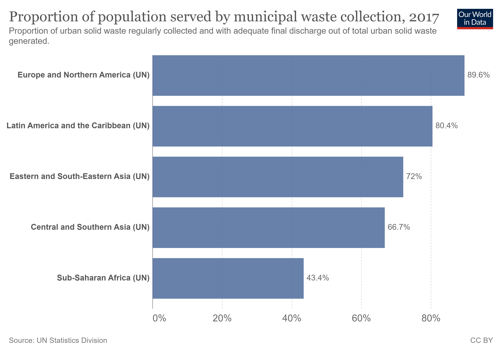

SDG 11, Indicator 6 aims to reduce the adverse per capita environmental impact on cities, recognizing the significant impact that urbanization can have on the environment.
One aspect of this indicator is solid waste management.
Solutions that have been proposed include waste reduction and recycling programs, developing sustainable waste management infrastructure, and promoting public awareness and education.
Many countries, NGOs, and companies around the world have taken steps towards improving solid waste management.
For example, Sweden has implemented a zero-waste policy, and the Ellen MacArthur Foundation works to promote a circular economy to minimize waste.
Companies such as TerraCycle have developed recycling programs for hard-to-recycle materials.
It is essential to continue efforts to improve solid waste management to reduce the negative environmental impact of cities.
